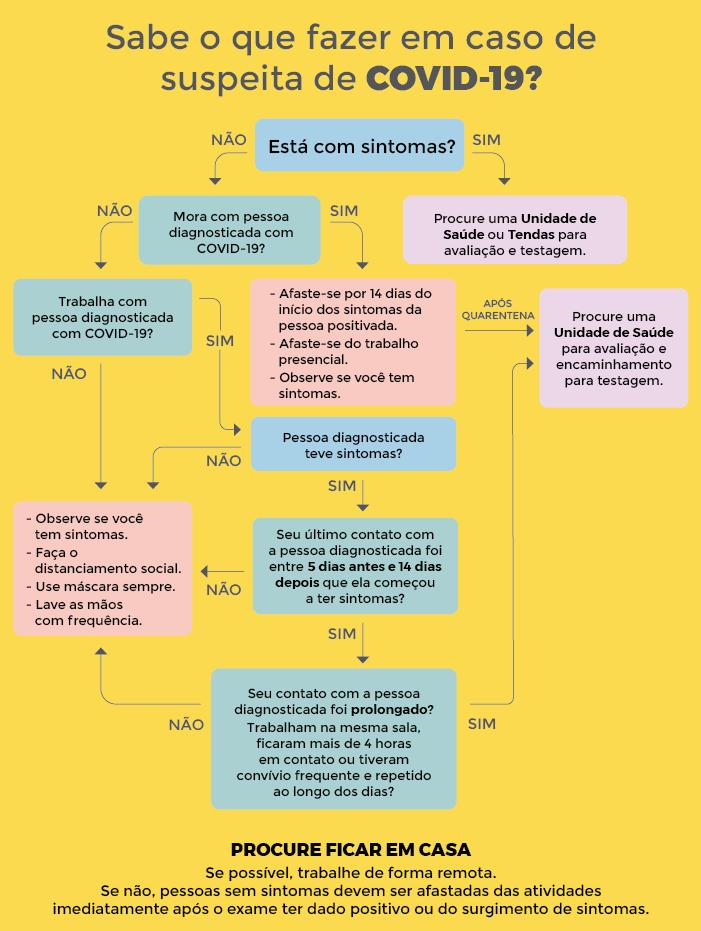

Dicas de saúde

Oque devo fazer?
Se você está com sintomas como febre, dor de cabeça, cansaço, diarreia, dor no corpo, perda de olfato ou paladar, busque atendimentos em qualquer unidade de saúde de Porto Alegre (postos de saúde), ou nas tendas de atendimento exclusivas para Covid. Lá você será avaliado e, se indicado, encaminhado para o teste do Covid-19. Você também pode entrar em contato com o TeleSus através do telefone 136.
Nestes casos, onde devo buscar atendimento?
Procure a sua unidade de saúde da Atenção Primária de referência - postos de saúde. Além disso, Porto Alegre têm hoje 8 unidades que atendem até às 22 horas que atendem qualquer pessoa que more em Porto Alegre. Não vá para as tendas, esse local é para atender pessoas com sintomas. Ir lá coloca você em risco.
O que você precisa levar?
É importante perguntar ao seu colega às seguintes informações. Isso vai ajudar muito na escolha do melhor teste, e o melhor momento para realizá-lo:
- CPF do contato (colega) que apresentou a confirmação da doença (não obrigatório, mas importante para rastrear como a infecção está ocorrendo na cidade)
- Data de início dos sintomas do colega de trabalho